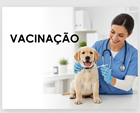

Vacinação
O Melhor Cuidado para a Saúde do Seu Pet
Como um amante dos animais, você provavelmente já se preocupou com o que faria se algo ruim acontecesse com seu pet. A boa notícia é que uma das maneiras mais eficazes de protegê-lo e garantir uma vida longa e saudável é através da vacinação.
A imunização é um pilar fundamental da medicina veterinária preventiva. Ela é essencial para evitar que seu animal de estimação contraia e transmita doenças graves, que muitas vezes são silenciosas e podem, infelizmente, ser fatais. Vacinar seu pet significa construir um escudo de proteção contra vírus e bactérias, garantindo que ele possa explorar o mundo com segurança e alegria.
As vacinas protegem contra uma série de enfermidades que podem comprometer seriamente a qualidade de vida do seu companheiro. Quer descobrir quais vacinas seu animal de estimação precisa para viver protegido e feliz?
Entre em contato conosco e consulte nosso veterinário. Juntos, montaremos o melhor protocolo de vacinação para o seu pet!